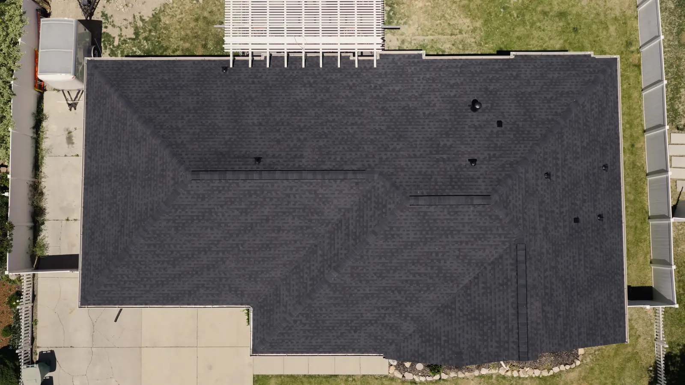
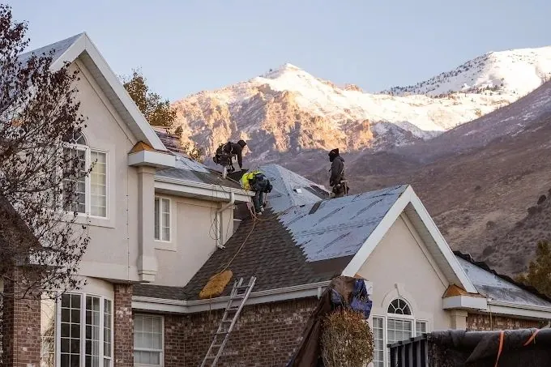

A brown spot on the ceiling. A drip in the closet after a storm. A musty smell in the attic. However it shows up, a roof leak raises the same two questions: where is the water coming from, and how big a deal is it?
This guide covers the causes we see most on Northern Utah homes, how to narrow down the source from inside your house, and when a quick fix is fine versus when you need a licensed roofer.
Why the leak is never where the stain is
Water that gets through the roof doesn't fall straight down. It lands on the roof deck or the top of a rafter and runs along it, sometimes several feet, until it finds a low point or a gap in the drywall. That's why patching the shingles directly above a stain so often doesn't work.
Finding a leak means following the water backward: from the stain, up into the attic, along the wood, to the point where it first got in.

The most common causes of roof leaks
1. Damaged or loose flashing
Flashing is the metal that seals the joints around chimneys, skylights, dormers and anywhere a roof meets a wall. It's one of the most common places roofs leak. Sealant dries out, nails back out, and metal shifts as the house expands and contracts through Utah's hot summers and cold winters. A leak near a chimney or along an upstairs wall usually starts here.
2. Missing, cracked or lifted shingles
Wind can lift shingle edges or tear shingles off entirely, and hail can crack them or knock off the protective granules. Once a shingle is gone or broken, water reaches the underlayment, and from there it's a matter of time. After a big wind storm, look for shingles in the yard or bare patches on the roof from the ground.
3. Worn pipe boots and roof vents
Plumbing vent pipes come through the roof with a rubber boot sealed around them. Sun and freeze-thaw cycles crack that rubber over the years, and water runs down the outside of the pipe into your attic. Box vents and exhaust fans can loosen the same way. A leak over a bathroom often traces back to a vent.
4. Valleys
Valleys are where two roof slopes meet and channel water down together. They carry more water than any other part of the roof, so a worn shingle, a nail in the wrong place or debris build-up there shows up fast as a leak.
5. Clogged gutters
When gutters fill with leaves and debris, water backs up over the edge of the roof and can soak the fascia, the roof deck and the top of the wall. Ice in winter does the same thing. A leak right along an exterior wall, near the ceiling line, is often a gutter problem rather than a shingle problem.
6. Ice dams
Northern Utah gets real snow. The University of Utah's Salt Lake Valley snowstorm climatology puts the airport at about 65 inches a year and the benches near 100. When heat from the house melts that snow, the water refreezes at the cold eaves. North Dakota State University Extension describes it plainly: heat escaping into the attic warms the roof and melts the snow, and the meltwater freezes again at the edge, building a dam that pushes water up under the shingles.
7. Skylights
Skylights leak either around the frame, where the flashing meets the roof, or through the unit itself if the seals have failed. Condensation on the glass can look like a leak too, so check whether it happens when it rains or when it's cold.
8. An old roof
Every roof wears out. Shingles get brittle, lose granules and curl, and the underlayment beneath them breaks down. When leaks start showing up in different places, it's usually a sign the whole roof is near the end of its life, not just one bad spot.
How to narrow down a leak from inside
You can learn a lot without ever climbing a ladder. Start here:
- Note when it leaks. Only in heavy rain? Only with wind from one direction? Only in winter? Each points to a different cause.
- Check the attic on a dry day. With a flashlight, look for dark stains, water trails on rafters, wet insulation or daylight coming through.
- Look up from the stain. Find the spot in the attic above the ceiling stain, then follow any trail uphill toward the roof.
- Check what's above it outside. From the ground, look for a chimney, vent, skylight, valley or wall joint above that area.
- Take photos with dates. They help your roofer, and they help with an insurance claim if storm damage is involved.
Please don't walk on a wet, icy or steep roof to look for the leak. It's not worth the fall.

Can a handyman fix a roof leak?
Sometimes, for very small jobs. Utah's contractor licensing law has a "handyman exclusion" in Utah Code 58-55-305 that lets an unlicensed person take on small repairs below a set dollar value, counting both labor and materials. Above that limit, the work requires a licensed contractor. The dollar amount has been raised over the years (a 2016 Kaysville City handyman guide shows the older figures), so check the current limit with the Utah Division of Occupational and Professional Licensing before you hire.
The bigger question is whether the fix will work. A handyman might reseal a cracked pipe boot just fine. But most leaks aren't that simple, and a dab of roofing tar over the wrong spot hides the symptom while water keeps soaking the deck. If you're not sure where the water is getting in, you need someone who can find the source, not just cover the stain.
| A handyman may be fine | Call a licensed roofer |
|---|---|
| One obvious, small problem (a cracked vent boot) | You can't tell where the water is coming from |
| Small job within the handyman exemption | Leaks in more than one spot, or leaks that came back |
| No storm or insurance claim involved | Wind or hail damage you may claim on insurance |
| The roof is otherwise in good shape | Curling or missing shingles, soft spots, an older roof |
Repair or replace?
One leak from one cause on a healthy roof is usually a repair. Leaks in several places, shingles curling or bald across the roof, or a deck that feels soft are signs the roof itself is worn out, and patching will keep costing you. Our roof repair and roof replacement pages explain how we make that call. If a storm caused it, see storm damage roof repair.
What to do right now if your roof is leaking
- Catch the water with buckets and towels, and move furniture and electronics out of the way.
- If a ceiling is bulging with water, keep people away from it and call a professional.
- Photograph the stain, the drip and anything you can see from the ground outside.
- Book a roof inspection so the source gets found and fixed before the next storm.
Roof leak questions
What is the most common cause of a roof leak?
Can a handyman fix a roof leak?
Why does my roof only leak when it rains hard?
Why does my roof leak in winter but not summer?
Is a small roof leak an emergency?
Get a straight answer about your leak
Aesthetic Roofing is a GAF Master Elite® roofing contractor in South Jordan. Book a free Roof Health Report and a certified inspector will find where the water is getting in, show you what they found, and lay out your options. Call (801) 810-2276 or book online.
Sources
- North Dakota State University Extension: Reduce ice dam and icicle damage (January 2023)
- University of Utah, Department of Atmospheric Sciences: Salt Lake Valley Snowstorms
- Kaysville City: Handyman Information (2016; quotes Utah Code 58-55-305)
- Utah Division of Occupational and Professional Licensing: dopl.utah.gov